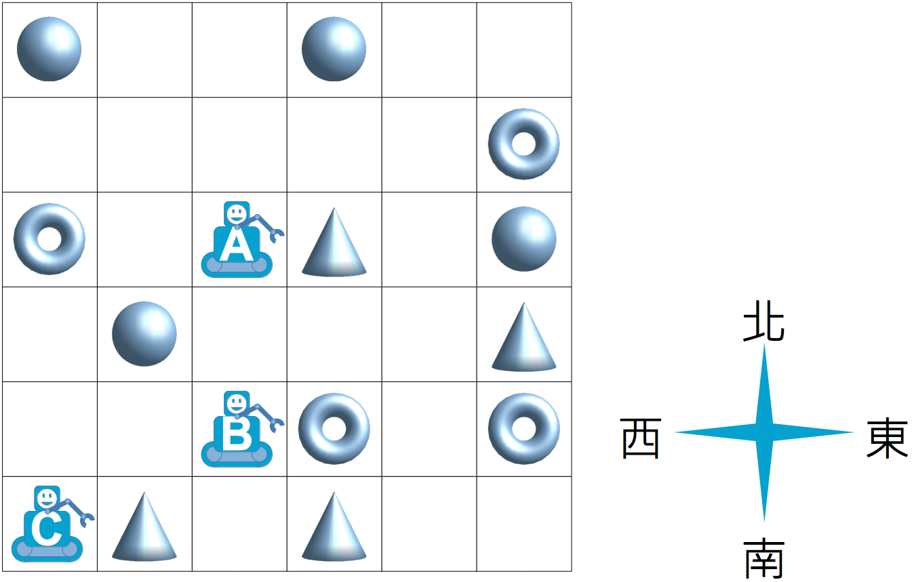

倉庫機器人
在一間倉庫中，有三個機器人負責撿取散落在地上的貨物。由於倉庫內發送指令的主機只有一台，所以三個機器人都會收到同樣的指令，同步執行相同的動作。
控制主機台只有「東」、「西」、「南」、「北」四個按鈕，按下這四個按鈕分別代表傳遞指令給三個機器人往 東邊、西邊、南邊、或北邊 走一格，然後撿起該格內的貨物（也可能沒有貨物）。
舉例來說，假設倉庫內三個機器人和地上貨物的散佈如下圖所示，當機器人依序收到「 北、北、南、南、東」 指令時，機器人 A 會撿起一個圓椎、機器人 B 會撿起一個圓環、機器人 C 會撿起一個圓椎。

請問下列的哪一系列指令，剛好可以讓三個機器人分別撿起一顆球、一個圓椎和一個圓環？